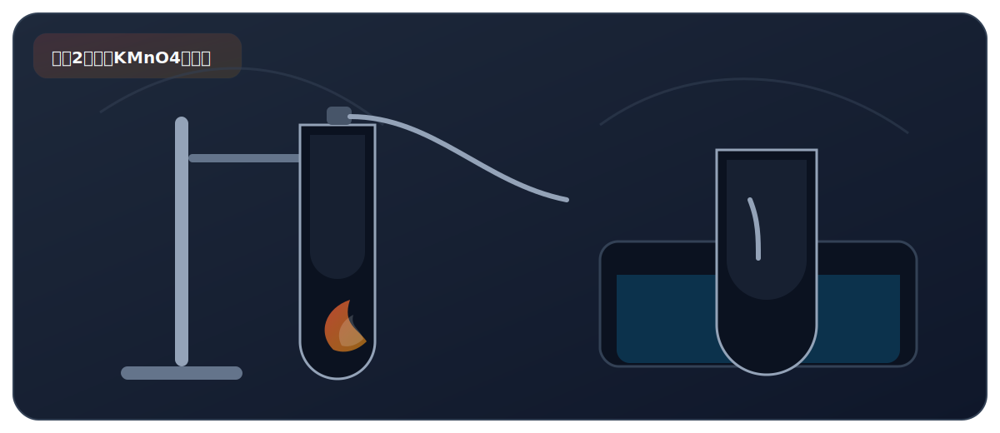

实验二、加热高锰酸钾制氧气

来自 PDF《化学实验基础知识及课本实验总结》的整理。建议：先读“实验原理”，再背“操作顺序”，最后用“误差分析/注意事项”拿分。
实验目标
- 掌握用 KMnO4 加热制氧气的装置、操作顺序与关键注意事项。
必背方程式
- 2KMnO4 -> K2MnO4 + MnO2 + O2
核心原理
- 加热固体放出氧气；O2 微溶于水且不与水反应，可用排水法收集。
- 也可利用 O2 密度比空气大，用向上排空气法收集（一般优先排水法）。
关键步骤（怎么做）
- 检：检查气密性。
- 装：装入药品（平铺于试管底部），塞好带导管橡皮塞（导管稍伸出）。
- 固：固定装置（铁夹夹在试管中上部）。
- 点：预热后集中加热；试管口略向下倾斜。
- 收：导管口出现连续均匀气泡再开始收集；集满后水下盖玻璃片取出。
- 移：先把导管移出水面。
- 灭：再熄灭酒精灯（防倒吸、避免炸裂）。
高频考点（怎么拿分）
- 试管口放棉花：防止粉末进入导管造成堵塞。
- “先移导管后灭火”是高频考点：防倒吸、防炸裂。
常见错误（怎么避坑）
- 一开始就收集：装置内空气使氧气不纯。
- 先灭火后移导管：冷却导致倒吸，水进入热试管易炸裂。
安全提醒
- 加热玻璃仪器先预热；外壁擦干，避免受热不均。
PDF摘录（原文提取，供对照）
实验仪器
- 酒精灯、试管、铁架台、导管、集气瓶、水槽 实验前，连接装置后，接下来的实验步骤依次为：检、装、 固、点、收、移、灭（顺序不能调换）。
实验操作
- 检：检查装置气密性；
- 装：装入药品；
- 固：用铁架台固定仪器装置；
- 点：点燃酒精灯；
- 收：收集氧气；
- 移：移出导管；
- 灭：熄灭酒精灯。
- 排水法：O2 不易溶于水，且不与水反应；
- O2 的收集：导管口刚开始有气泡冒出时，不宜收集，因为刚开 始的气体为装置内的空气；看到导管口气泡连续均匀冒出时， 收集 才开始收集；集气瓶瓶口有大气泡冒出时，说明气体已经集满；
- 集满后的操作：在水下用玻璃片的毛片盖好集气瓶口，移出水 面，正放在桌面上。
- 说明：O2 的密度比空气大，也可以用向上排空气法收集。
检验
- O2 的检验：将带有火星的木条放入集气瓶中，若木条复燃，说 明集气瓶内的气体是氧气。
验满
- O2 的验满：将带有火星的木条放在集气瓶口，若木条复燃，说 明氧气已集满。
- 试管口略向下倾斜：防止冷凝水倒流回试管底部使试管炸 裂 药品要平铺在试管底部：使其均匀受热 铁夹应夹持在试管的中上部（或者距试管口的 1/3 处） 试管内的导管稍伸出胶塞：便于气体导出
- 试管口放一团棉花：防止加热时，试管内粉末状固体进入 导管
注意事项
- 加热前导管不能伸入集气瓶口内，待导管口产生连续气泡 时才能开始收集 收集完毕，先将导管移出水面，再熄灭酒精灯：防止冷凝 水回流试管炸裂 伸入集气瓶中的导管不宜过长：便于观察气泡的速度和取
- 出集气瓶 收集前集气瓶内应装满水，不要留有气泡：防止收集的 O2 不纯 实验过程中和实验结束后试管炸裂的原因？
- 加热前试管外壁有水
- 加热时，试管未预热
原因分析
- 试管口未向下倾斜
- 加热时试管底部与酒精灯灯芯接触
- 先熄灭酒精灯，后将导管从水槽中移出
- 实验后，试管未冷却，直接清洗试管